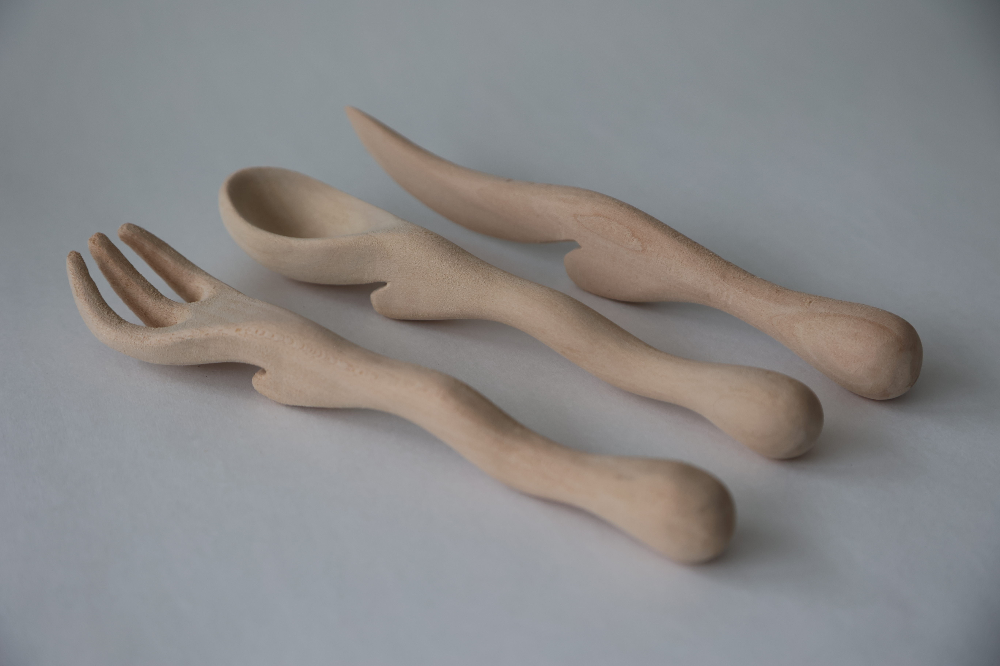
Wooden Flatware
Inspired by the movement of water, this three-piece beechwood flatware set uses continuous curves and sculpted handles to guide the hand. An integrated stand lifts the utensils off the table.
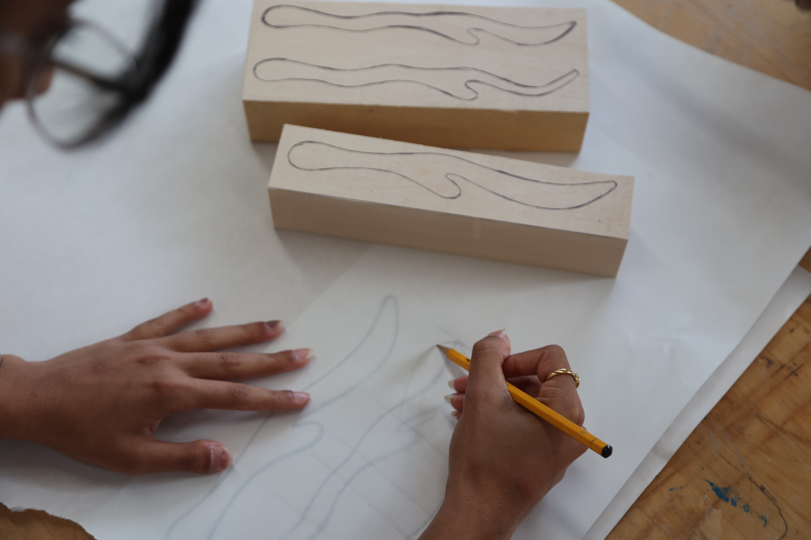
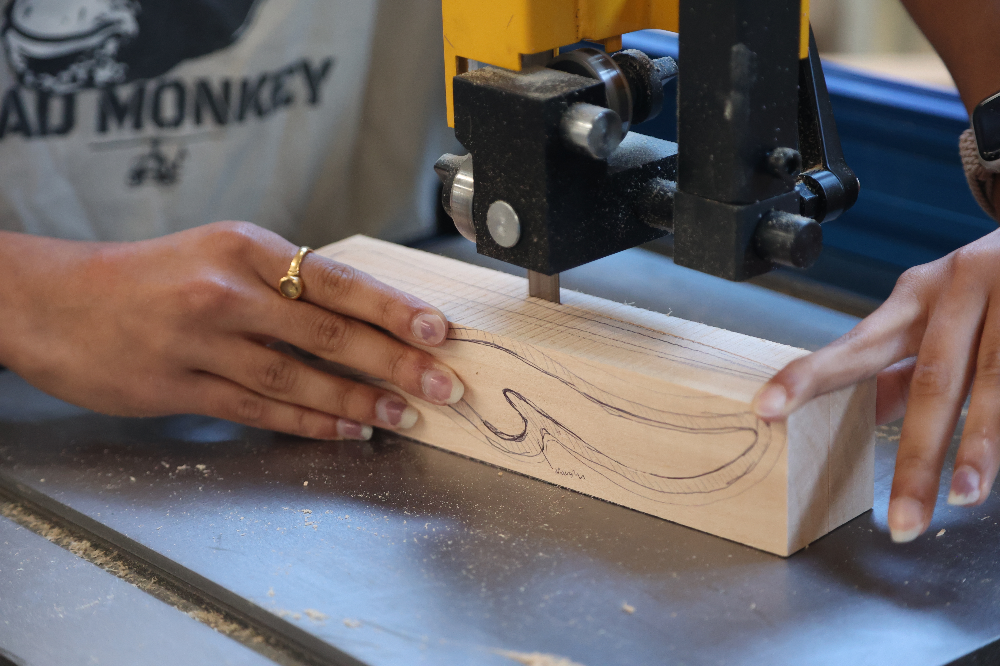
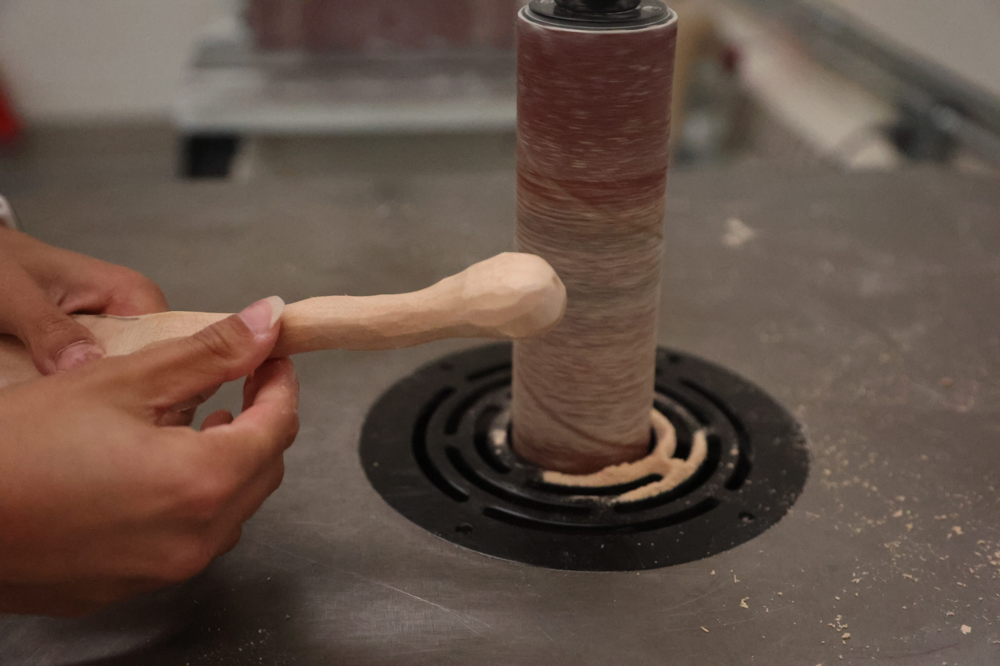
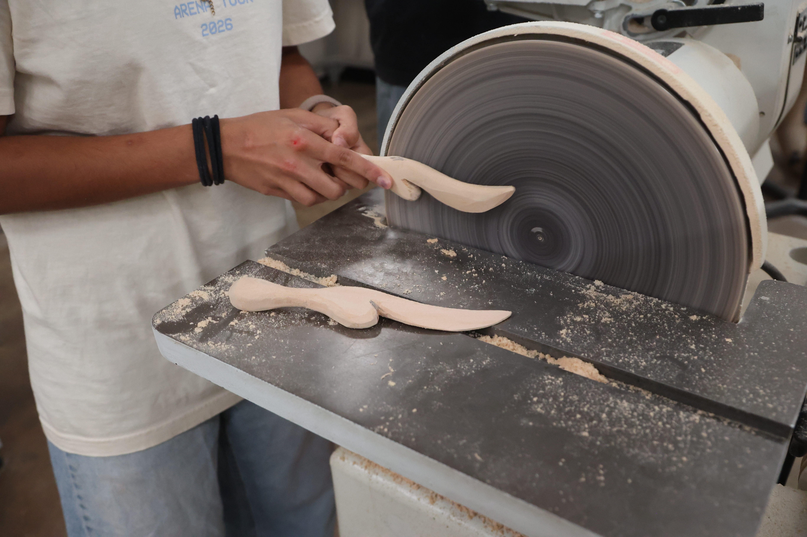
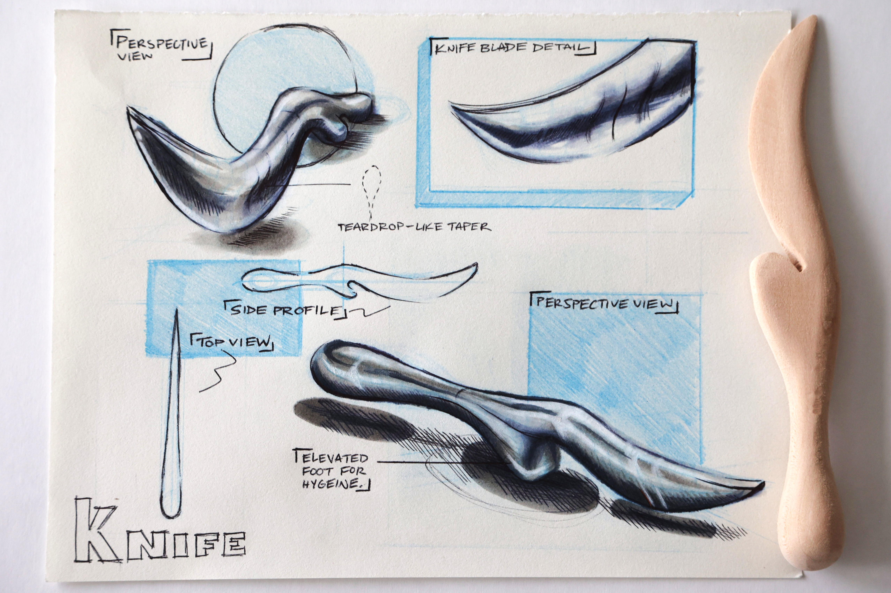
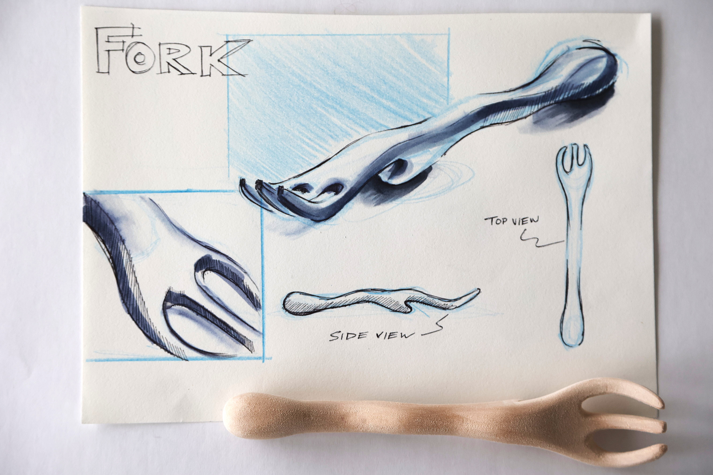
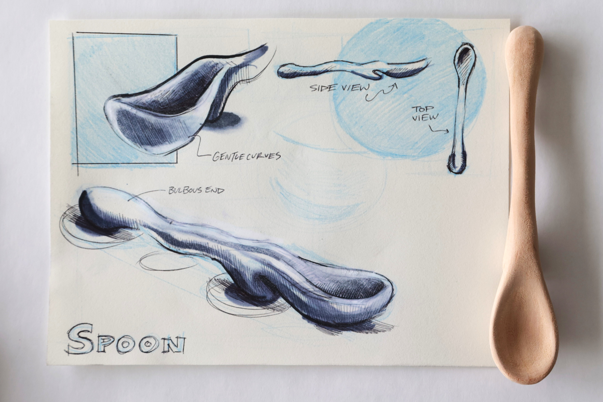
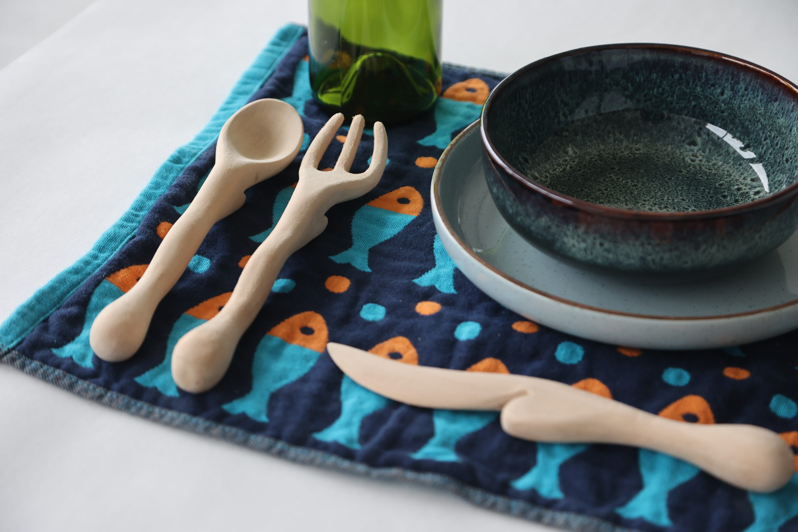
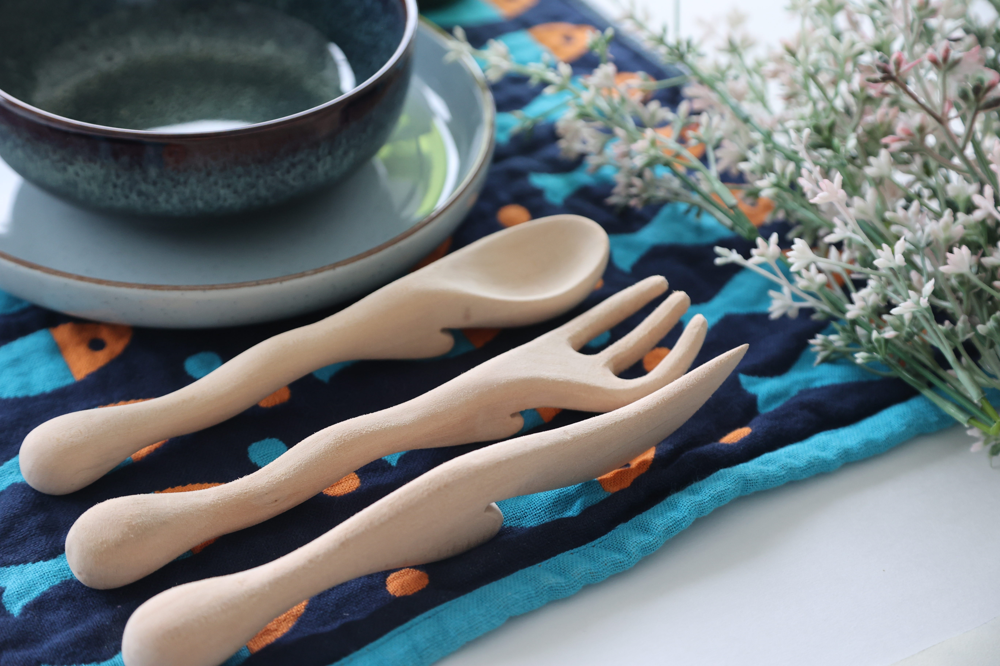
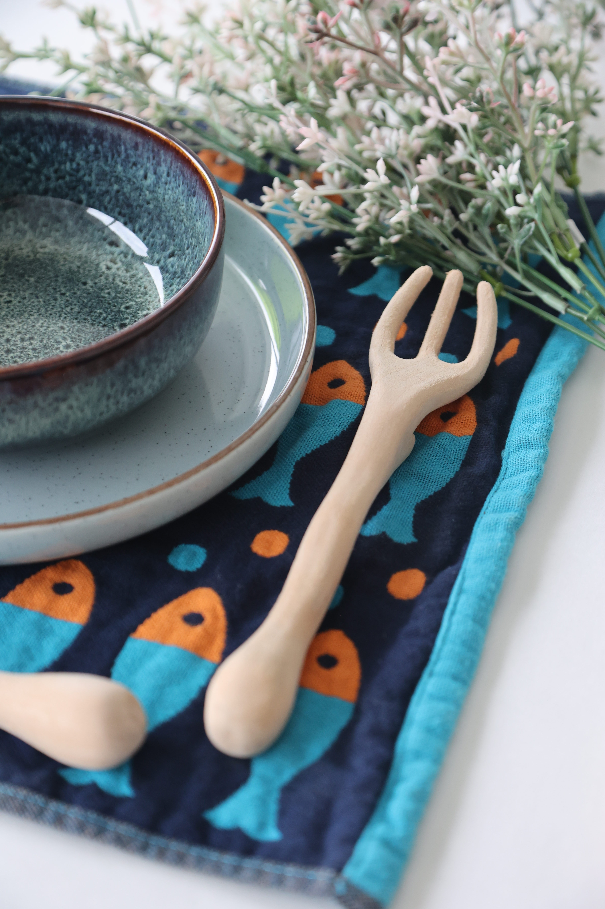
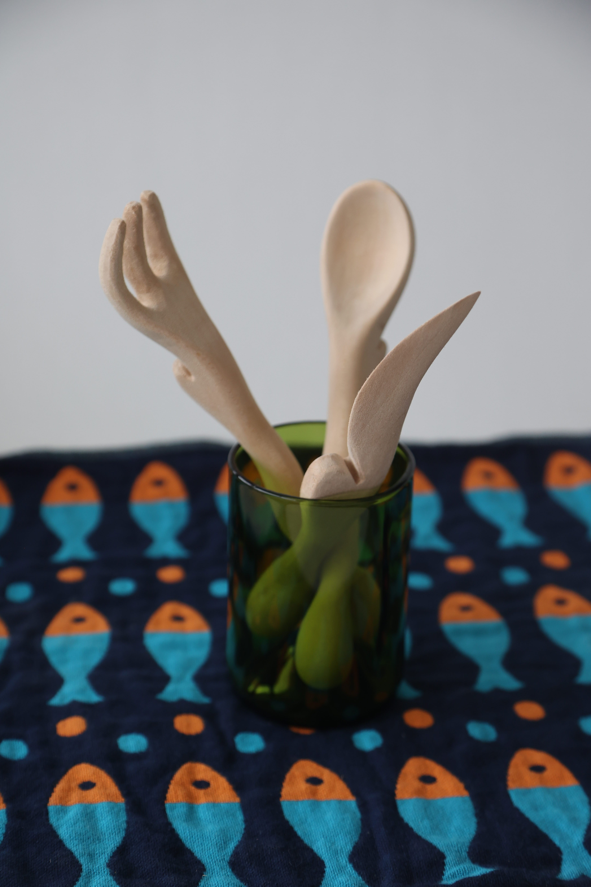